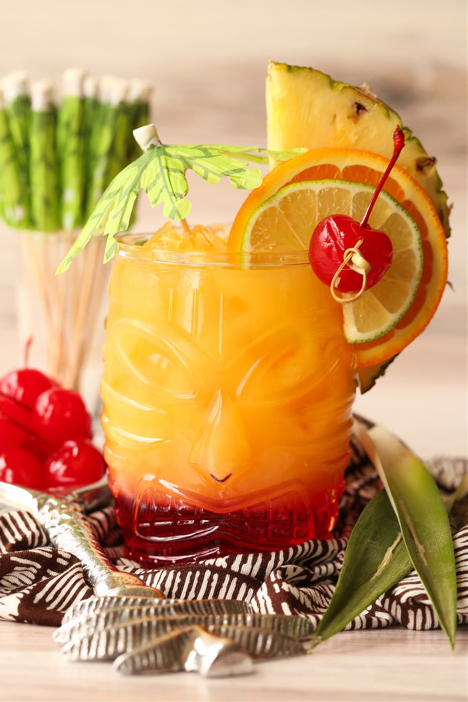

Maitai
Mai Tai
A bright, balanced rum classic with fresh lime, orange curaçao, and almond-rich orgeat. The Mai Tai is strong, citrusy, and one of the essential drinks of tiki culture.
What You'll Need
Ingredients
- 2 oz aged rum
- 1 oz fresh lime juice
- 1/2 oz orange curaçao
- 1/2 oz orgeat syrup
- 1/4 oz simple syrup
- Mint sprig and lime shell, for garnish
Mix It Up
Instructions
- Add the rum, lime juice, orange curaçao, orgeat, and simple syrup to a shaker with ice.
- Shake until well chilled.
- Strain over crushed ice in a rocks glass.
- Garnish with a mint sprig and the spent lime shell.
MO'S MOJO Tip: For a drier drink, reduce or leave out the simple syrup.